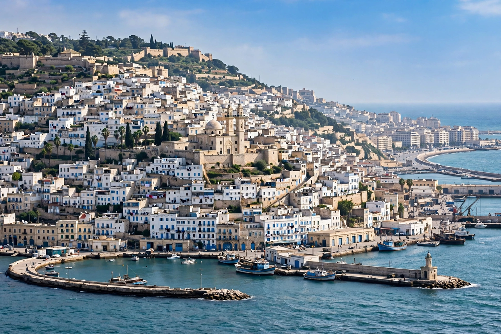

[Image placeholder: The bay of Algiers and the Casbah]| Country | Algeria |
|---|---|
| Population | About 3 million (city); metro over 5 million, estimates |
| Founded | Ancient Ikosim; refounded 944 AD |
| Nickname | Alger la Blanche — 'Algiers the White' |
**Algiers** is the capital and largest city of Algeria, on the Mediterranean coast of North Africa. Nicknamed 'Algiers the White' for its whitewashed buildings gleaming above the bay, it ranges from the Ottoman-era Casbah — a UNESCO World Heritage Site — through French colonial boulevards to modern suburbs climbing the Sahel hills.
The city was founded as the Phoenician trading post Ikosim, became a Roman town (Icosium), and was refounded in the tenth century. From 1516 it was a notorious base of Barbary corsairs under Ottoman suzerainty until French forces seized it in 1830, beginning 132 years of colonisation.
During the Algerian War, the Casbah was the FLN's stronghold and the setting of the Battle of Algiers (1956–57), immortalised in Gillo Pontecorvo's film. Since independence in 1962 Algiers has been the political centre of Africa's largest country by area and a major energy exporter.
Notable sights include the Casbah's citadel and Ketchaoua Mosque, the basilica of Notre Dame d'Afrique overlooking the bay, the Martyrs' Memorial (Maqam Echahid, opened 1982), and the Grand Post Office in neo-Moorish style.